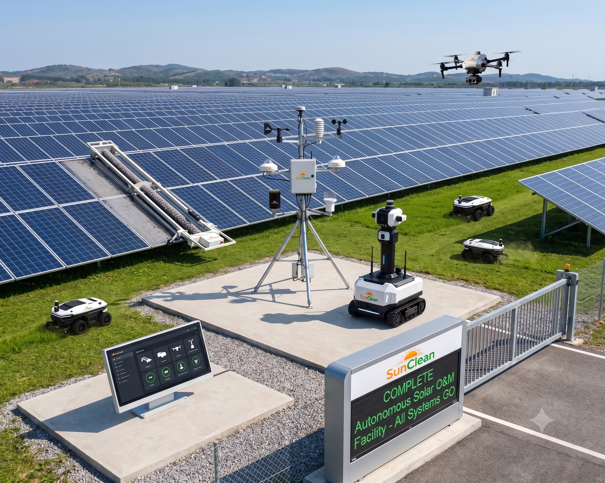

Smart Technologies for
Efficient Solar Plant Operations
Modern solar power plants require more than routine maintenance to achieve maximum performance. SunClean's portfolio helps asset owners manage vegetation, security, inspections, and rising costs through advanced automation, robotics, and aerial intelligence.

Grass Cutter Robots
Automated Vegetation Management for Solar Parks

Vegetation growth beneath solar modules reduces generation, restricts access, increases fire hazards, and adds recurring expenses. Traditional cutting requires heavy manpower — SunClean offers advanced robotic solutions for efficient vegetation control in utility-scale solar parks.
What We Offer
- Autonomous grass cutter robots
- Remote-controlled grass cutting machines
- Solar park vegetation management solutions
- Battery-powered operation
- Terrain-adaptive mowing systems
- Large-area coverage solutions
✔ Key Advantages
- Reduces vegetation management costs
- Minimizes manual labor requirements
- Maintains consistent vegetation height
- Improves accessibility for maintenance teams
- Reduces fire hazards
- Suitable for large-scale solar parks
Solar Security Robots
Intelligent Surveillance and Asset Protection

Utility-scale solar plants span hundreds of acres — often in remote areas where theft, trespassing, and vandalism cause significant losses. SunClean provides AI-enabled security robots with advanced monitoring for 24/7 asset protection.
What We Offer
- Mobile surveillance robots
- AI-enabled security monitoring
- Camera-integrated inspection robots
- Perimeter monitoring solutions
- Remote surveillance platforms
- Day & night monitoring systems
✔ Key Advantages
- Continuous plant monitoring
- Reduced security manpower
- Real-time event notifications
- Improved perimeter protection
- Thermal & infrared night vision
- AI-based object recognition
Thermography Drones
Advanced Thermal Inspection Solutions

Undetected faults cause performance losses until they impact generation. Thermography inspections identify hotspots, defective modules, and electrical issues before they become major failures. SunClean provides drone-based thermal surveys for rapid, large-scale diagnosis.
🔍 Detectable Issues
✔ Key Advantages
- Early fault detection → reduced downtime
- Lower maintenance costs
- 10x faster inspection vs manual
- Improved plant reliability & generation
- Radiometric thermal imaging + AI analysis
- Detailed GPS-tagged reports
O&M Inspection Drones
Fast, Safe and Accurate Solar Plant Inspection

Routine inspections are critical but traditional methods are slow, labor-intensive, and risky. SunClean’s drone solutions provide aerial visibility, mapping, and digital documentation for entire solar parks.
📋 Applications
- Solar module inspection
- Structure & mounting inspection
- Cable route monitoring
- Construction progress tracking
- Asset inventory management
- O&M planning support
✔ Key Advantages
- 70% faster inspections
- Reduced manpower & safety risks
- 4K video + orthomosaic mapping
- GPS autonomous missions
- Cloud-based reporting & 3D site modelling
- Real-time video transmission
Transforming Solar Operations Through Technology
As solar plants expand in scale, advanced O&M technologies become essential. SunClean helps operators leverage robotics, AI surveillance, and aerial inspections to improve efficiency and maximize asset value.
Smart Operations. Reliable Assets. Better Performance.
From vegetation management to thermal inspection and 24/7 security — SunClean delivers integrated O&M technology stack for modern solar plants.